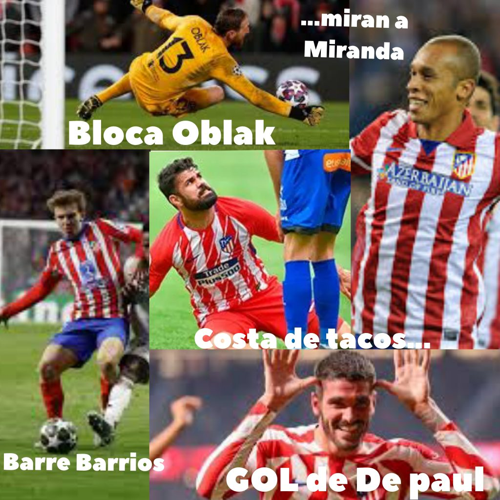
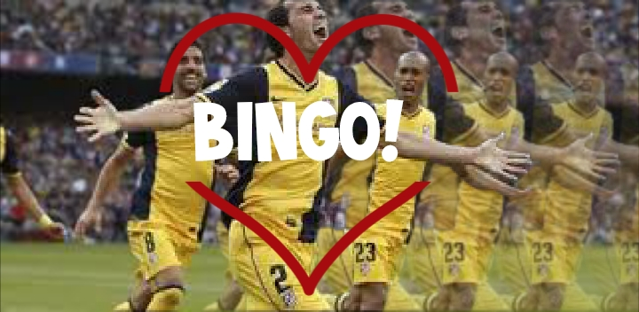
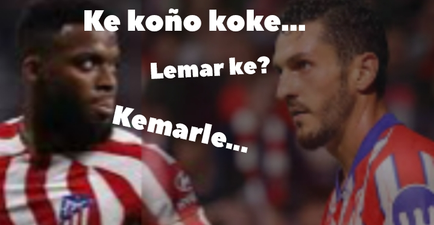
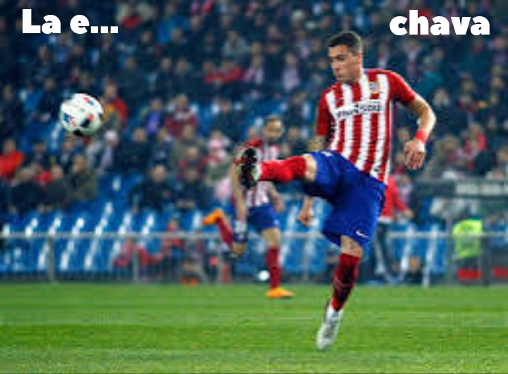
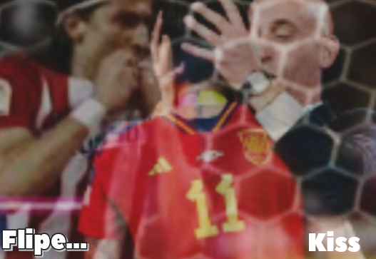
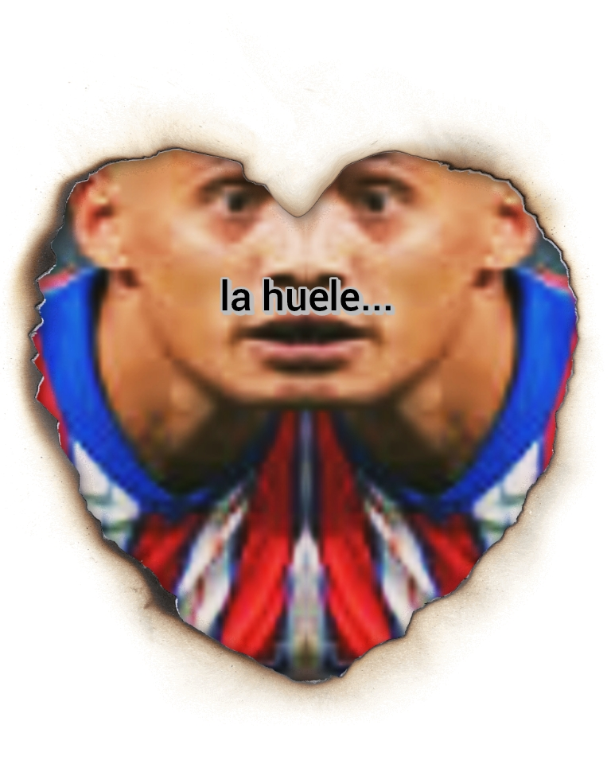
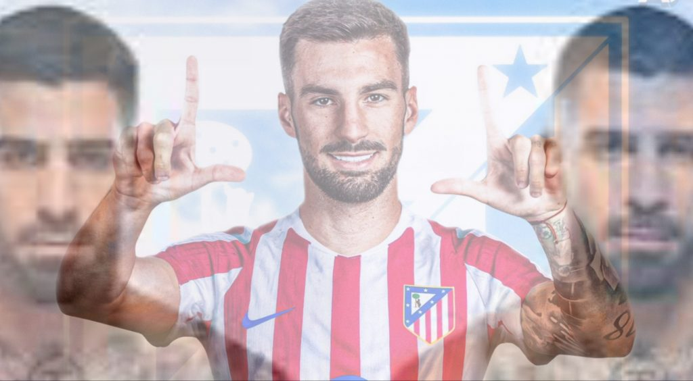
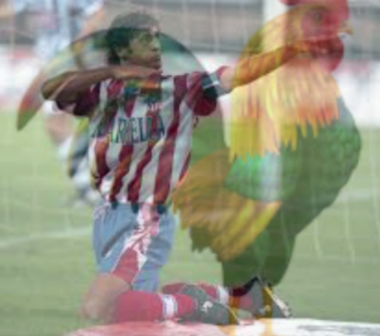
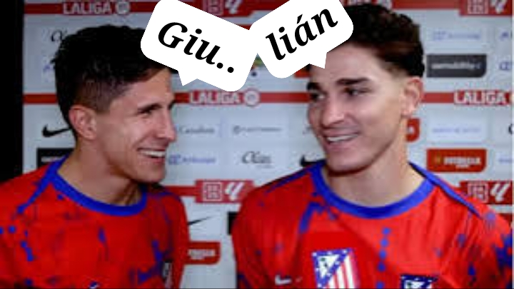

Atleti


















Un pequeño homenaje al tenis, con Rafa como co-protagonista, en un videopoema
Y como actor secundario en una versión de «Con el alma en pie» en videoclip


Clon estático de futbolia.org · recuperado y reconstruido en flove/projects · ver la versión mejorada